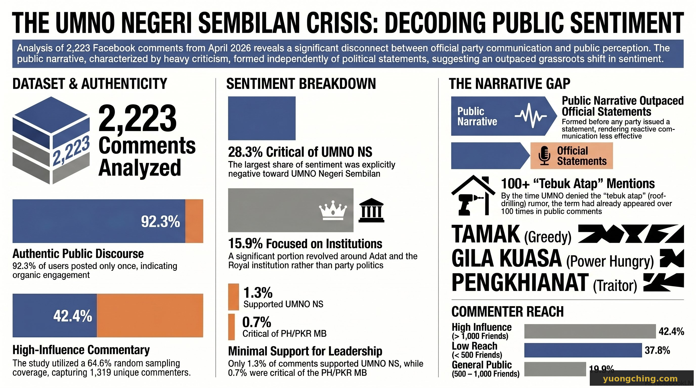

When UMNO Negeri Sembilan announced it was withdrawing support for the PKR Menteri Besar, the political class debated legitimacy. The public had already rendered its verdict — in 2,223 Facebook comments. And they did it before any party issued a single statement.
The Data

This analysis draws on 2,223 public Facebook comments from two UMNO NS posts, combined with profile data from 1,319 unique commenters — representing 64.6% of the total commenter population, sampled at random. Commenters are classified into three tiers based on friend count as a proxy for reach and authenticity.
What the numbers mean
The critical sentiment is organic, not manufactured. 42.4% of commenters have over 1,000 Facebook friends — users with established real-world social networks. No coordinated behaviour was detected: 92.3% of users posted only once, and no single user posted more than five times. This is genuine public anger.
The 'tamak kuasa' narrative has fully crystallised. The words tamak (greedy), gila kuasa (power-crazed), tebuk atap (backstab), and pengkhianat (traitor) together account for over 1,200 keyword appearances. UMNO's official justification — that the withdrawal was a principled response to the MB's mismanagement of the adat crisis — has not penetrated public consciousness. The public has already decided what this is about.
PH's counter-narrative is nearly absent. Only 0.7% of comments directly defended the PKR Menteri Besar. The vacuum is being filled by criticism of UMNO, but not by positive affirmation of PH governance — a missed communications opportunity.
The party statements
On 27–28 April 2026, all three major parties issued formal statements. Placed against the comment data, they reveal something important: the parties were not setting the narrative. They were responding to one the public had already built.
Key finding: The dominant public narrative — 'tamak kuasa', 'tebuk atap', 'pengkhianat' — had already formed organically before any party formally addressed it. By the time UMNO issued its denial of 'tebuk atap', the term had appeared over 100 times in public discourse. In Malaysia's digital public sphere, citizens are setting the narrative battleground. Political elites are being forced to fight on terrain they did not choose.
What comes next
The organic nature of the critical sentiment — driven by high-influence users, free of coordinated inauthentic activity — means this is not a social media storm that will pass quickly. The 'tamak kuasa' framing is sticky because it maps onto a long-standing public perception of UMNO that predates this crisis. For PRU16, UMNO NS faces the challenge of rebuilding credibility with a public that has already categorised this episode as self-serving. Based on the data, that work has not yet begun.